Exploratory Data Analysis
1 Rationale
Important for understanding data, checking for data issues/errors, checking assumptions for different statistical models.
LOOK AT YOUR DATA—most overlooked step in data analysis!
2 Preamble
2.1 Install Libraries
#install.packages("remotes")
#remotes::install_git("https://research-git.uiowa.edu/PetersenLab/petersenlab.git")2.2 Load Libraries
library("petersenlab")
library("car")
library("vioplot")
library("ellipse")
library("nlme")
library("effects")
library("corrplot")
library("ggplot2")
library("psych")3 Simulate Data
set.seed(52242)
n <- 1000
ID <- rep(1:100, each = 10)
predictor <- rbeta(n, 1.5, 5) * 100
outcome <- predictor + rnorm(n, mean = 0, sd = 20) + 50
number <- sample(1:1000, replace = TRUE)
predictorOverplot <- sample(1:50, n, replace = TRUE)
outcomeOverplot <- predictorOverplot + sample(1:75, n, replace = TRUE)
df <- data.frame(ID = ID,
predictor = predictor,
outcome = outcome,
predictorOverplot = predictorOverplot,
outcomeOverplot = outcomeOverplot)
df[sample(1:n, size = 10), "predictor"] <- NA
df[sample(1:n, size = 10), "outcome"] <- NA
df[sample(1:n, size = 10), "predictorOverplot"] <- NA
df[sample(1:n, size = 10), "outcomeOverplot"] <- NA4 Descriptive statistics
psych::describe(df)## Error in as.data.frame.default(utils::head(x, maxPrint)): cannot coerce class '"describe"' to a data.frame4.1 Sample
- N—expected?
- Extent of missingness
4.2 Distribution
- Frequencies
4.3 Central Tendency
- Mean
- Median
- Mode
4.4 Dispersion
- Standard deviation
- Observed minimum and maximum (vis-à-vis possible minimum and maximum)
- Skewness
- Kurtosis
4.5 Distribution Plots
See here for resources for creating figures in R.
4.5.1 Histogram
4.5.1.1 Base R
hist(df$outcome)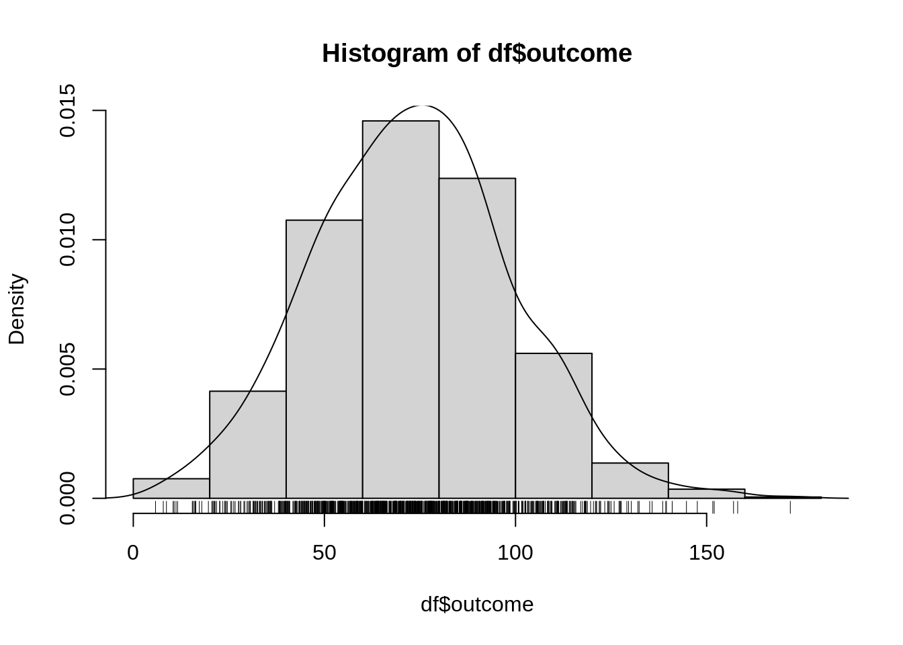
4.5.1.2 ggplot2
ggplot(df, aes(x = outcome)) +
geom_histogram(color = 1)## `stat_bin()` using `bins = 30`. Pick better value with `binwidth`.## Warning: Removed 10 rows containing non-finite values (stat_bin).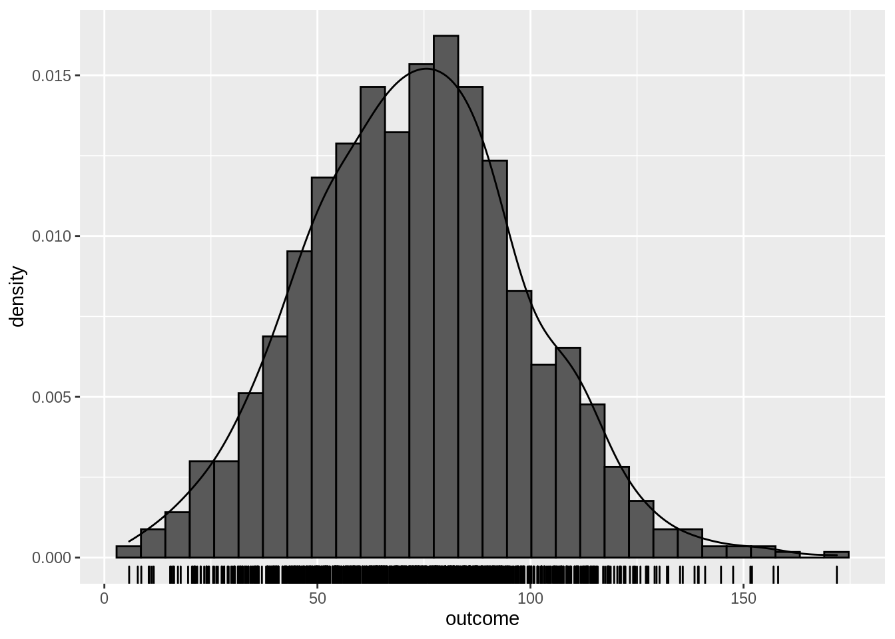
4.5.2 Histogram overlaid with density plot and rug plot
4.5.2.1 Base R
hist(df$outcome, prob = TRUE)
lines(density(df$outcome, na.rm = TRUE))
rug(df$outcome)4.5.2.2 ggplot2
ggplot(df, aes(x = outcome)) +
geom_histogram(aes(y = ..density..), color = 1) +
geom_density() +
geom_rug()## `stat_bin()` using `bins = 30`. Pick better value with `binwidth`.## Warning: Removed 10 rows containing non-finite values (stat_bin).## Warning: Removed 10 rows containing non-finite values (stat_density).4.5.3 Density Plot
4.5.3.1 Base R
plot(density(df$outcome, na.rm = TRUE))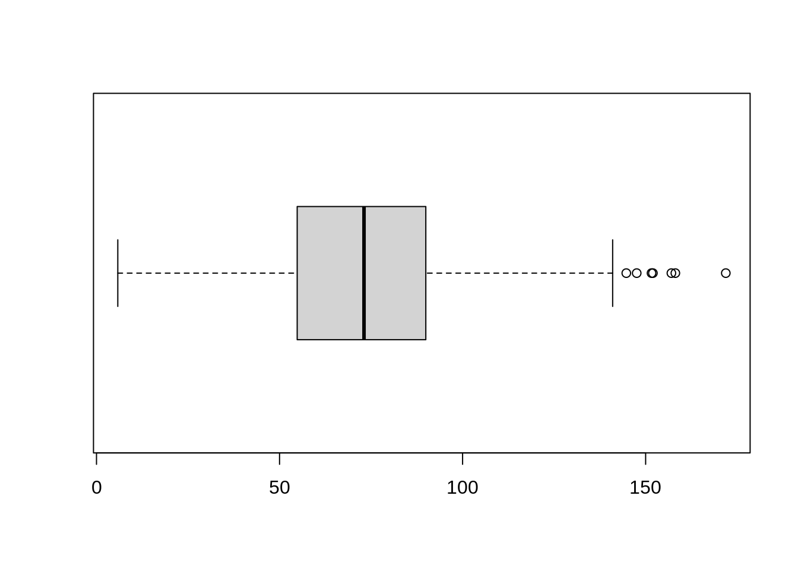
4.5.3.2 ggplot2
ggplot(df, aes(x = outcome)) +
geom_density()## Warning: Removed 10 rows containing non-finite values (stat_density).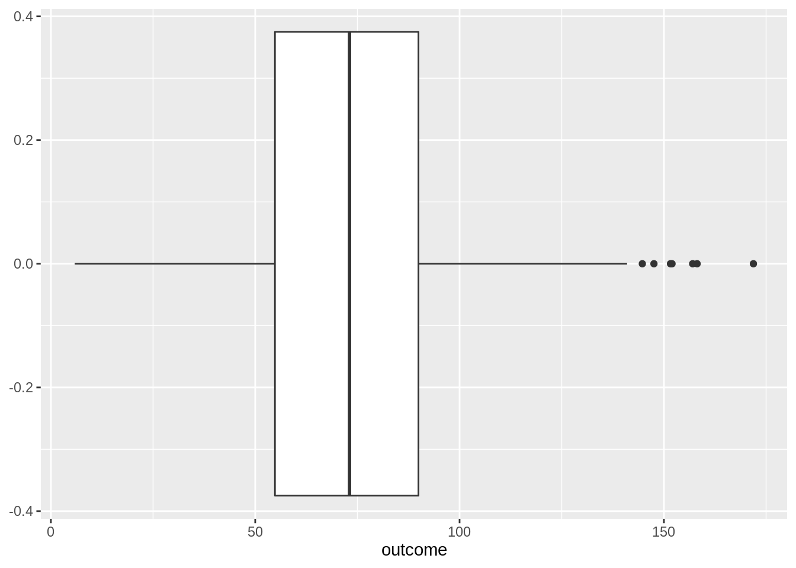
4.5.4 Box and whisker plot (boxplot)
4.5.4.1 Base R
boxplot(df$outcome, horizontal = TRUE)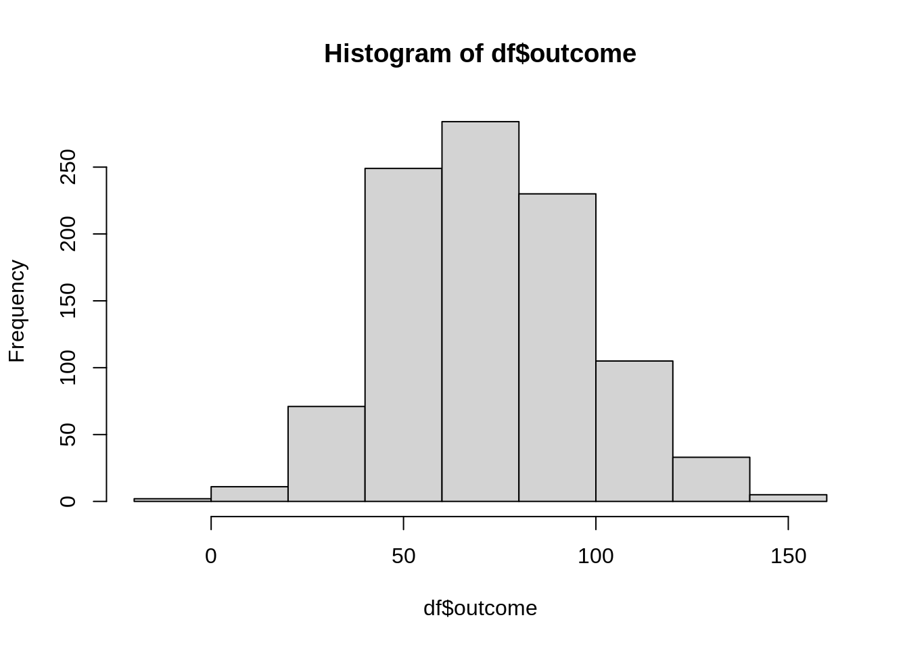
4.5.4.2 ggplot2
ggplot(df, aes(x = outcome)) +
geom_boxplot()## Warning: Removed 10 rows containing non-finite values (stat_boxplot).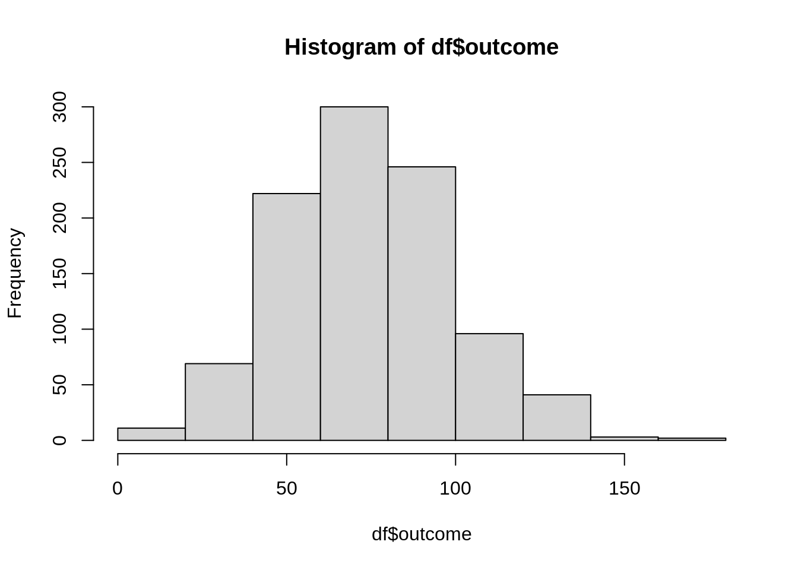 ### Violin plot
4.5.4.3 Base R
vioplot(na.omit(df$outcome), horizontal = TRUE)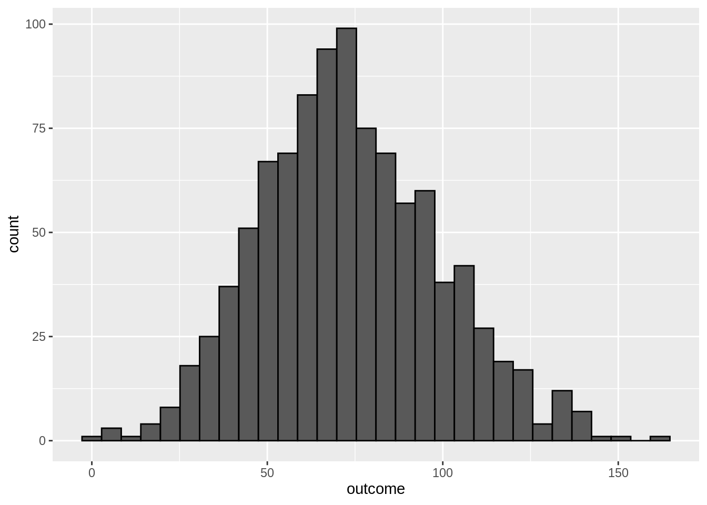
4.5.4.4 ggplot2
ggplot(df, aes(x = "", y = outcome)) +
geom_violin()## Warning: Removed 10 rows containing non-finite values (stat_ydensity).
5 Bivariate Associations
5.1 High Density Scatterplot
ggplot(df, aes(x = predictorOverplot, y = outcomeOverplot)) +
geom_point(position = "jitter", alpha = 0.3) +
geom_density2d()## Warning: Removed 20 rows containing non-finite values (stat_density2d).## Warning: Removed 20 rows containing missing values (geom_point).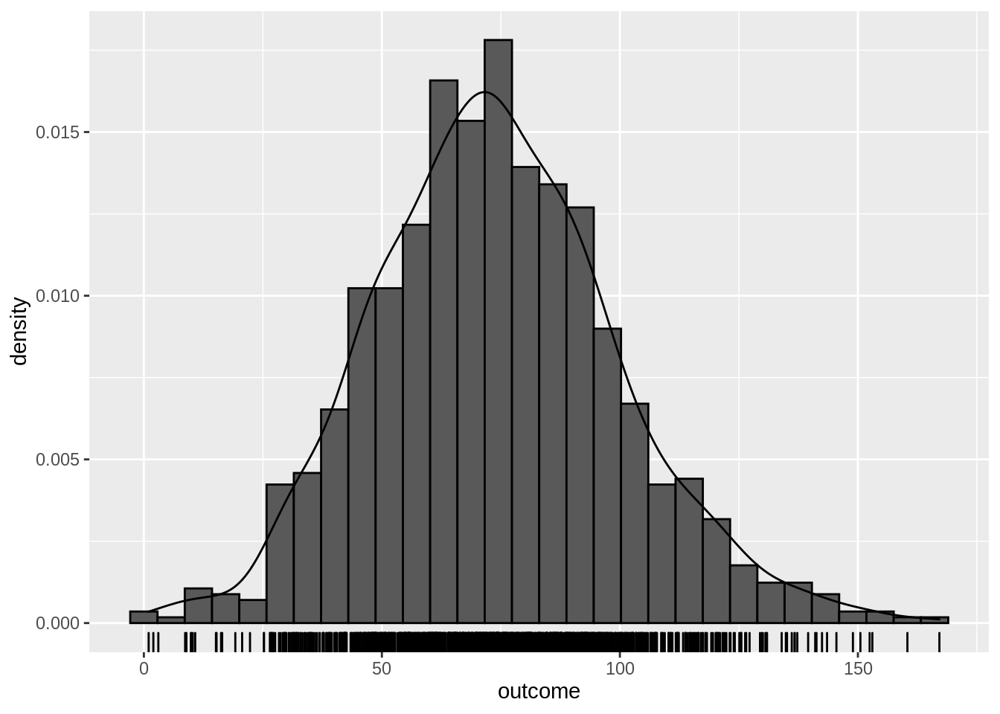
smoothScatter(df$predictorOverplot, df$outcomeOverplot)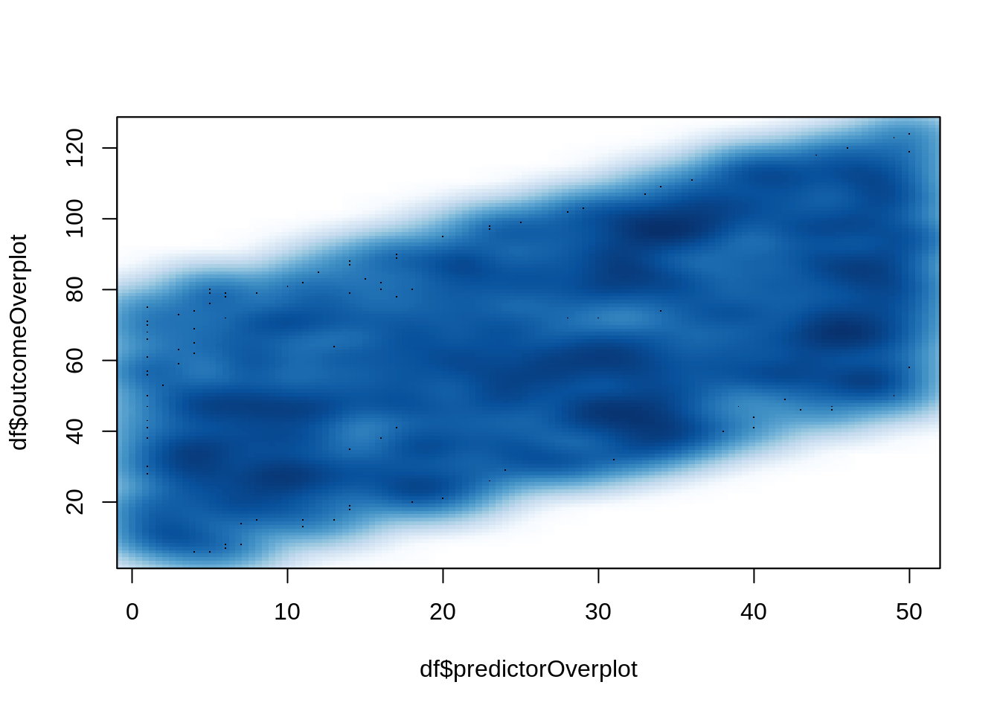
5.2 Data Ellipse
df_nomissing <- na.omit(df[,c("predictor","outcome")])
dataEllipse(df_nomissing$predictor, df_nomissing$outcome, levels = c(0.5, .95))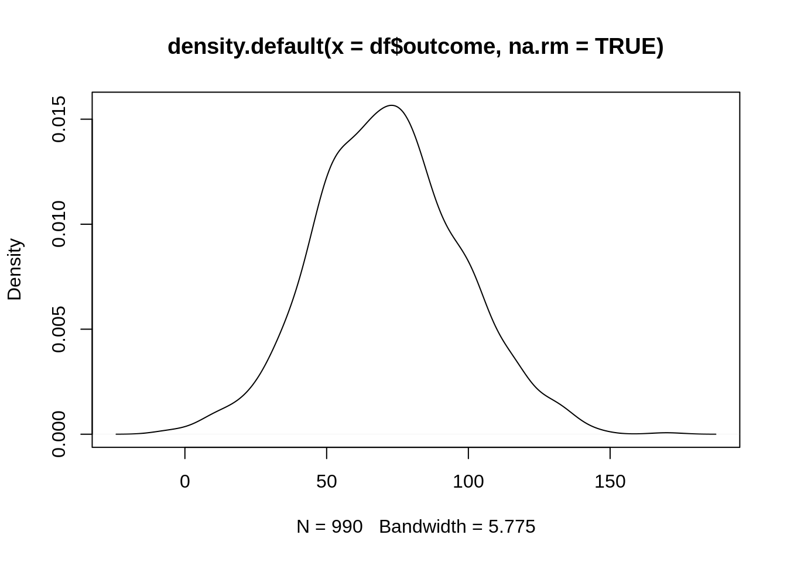
5.3 Visually Weighted Regression
vwReg(outcome ~ predictor, data = df)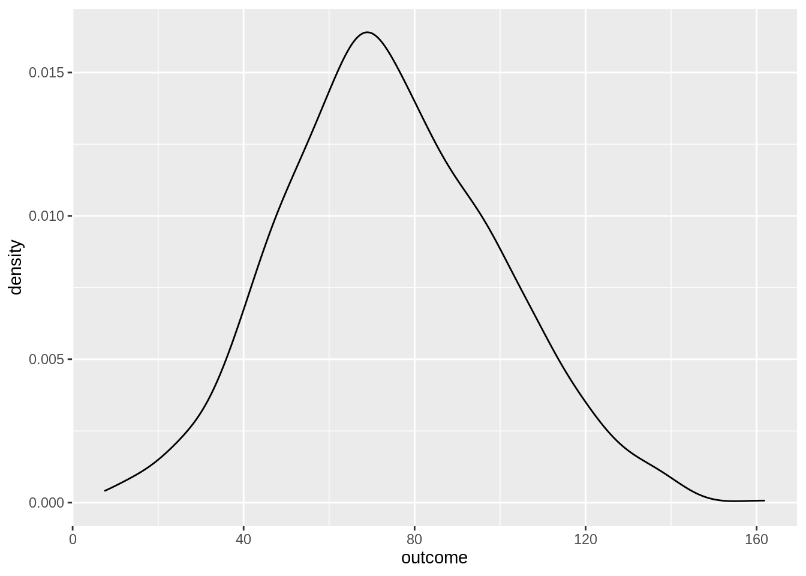
6 Basic inferential statistics
6.1 Statistical decision tree
6.2 Tests of systematic missingness (i.e., whether missingness on a variable depends on other variables)
- Generally test:
- Whether outcome variable(s) differ as a function of any model variables (predictors and covariates) and as a function of any key demographic characteristics (sex, ethnicity, SES)
- Whether focal predictor variable(s) differ as a function of any model variables (including outcome variable) and as a function of any key demographic characteristics
- For instance:
- Whether males are more likely than girls to be missing EEG scores
- Whether longitudinal attrition is greater in lower SES families
- If missingness differs systematically as a function of other variables, can include that variable as a control variable in models, and/or can include that variable in multiple imputation to inform imputed scores for missing values
6.3 Multivariate Associations
6.3.1 Correlation Matrix
6.3.1.1 Pearson Correlations
cor.table(df[,c("predictor","outcome","predictorOverplot","outcomeOverplot")])## predictor outcome predictorOverplot outcomeOverplot
## 1. predictor.r 1.00 .63*** -.03 .00
## 2. sig NA .00 .37 .93
## 3. n 990 981 980 980
## 4. outcome.r .63*** 1.00 -.01 -.02
## 5. sig .00 NA .81 .51
## 6. n 981 990 980 980
## 7. predictorOverplot.r -.03 -.01 1.00 .59***
## 8. sig .37 .81 NA .00
## 9. n 980 980 990 980
## 10. outcomeOverplot.r .00 -.02 .59*** 1.00
## 11. sig .93 .51 .00 NA
## 12. n 980 980 980 990cor.table(df[,c("predictor","outcome","predictorOverplot","outcomeOverplot")], type = "manuscript")## predictor outcome predictorOverplot outcomeOverplot
## 1. predictor 1.00
## 2. outcome .63*** 1.00
## 3. predictorOverplot -.03 -.01 1.00
## 4. outcomeOverplot .00 -.02 .59*** 1.00cor.table(df[,c("predictor","outcome","predictorOverplot","outcomeOverplot")], type = "manuscriptBig")## predictor outcome predictorOverplot outcomeOverplot
## 1. predictor 1.00
## 2. outcome .63 1.00
## 3. predictorOverplot -.03 -.01 1.00
## 4. outcomeOverplot .00 -.02 .59 1.006.3.1.2 Spearman Correlations
cor.table(df[,c("predictor","outcome","predictorOverplot","outcomeOverplot")], correlation = "spearman")## predictor outcome predictorOverplot outcomeOverplot
## 1. predictor.r 1.00 .59*** -.03 .01
## 2. sig NA .00 .28 .86
## 3. n 990 981 980 980
## 4. outcome.r .59*** 1.00 .00 -.02
## 5. sig .00 NA 1.00 .46
## 6. n 981 990 980 980
## 7. predictorOverplot.r -.03 .00 1.00 .58***
## 8. sig .28 1.00 NA .00
## 9. n 980 980 990 980
## 10. outcomeOverplot.r .01 -.02 .58*** 1.00
## 11. sig .86 .46 .00 NA
## 12. n 980 980 980 990cor.table(df[,c("predictor","outcome","predictorOverplot","outcomeOverplot")], type = "manuscript", correlation = "spearman")## predictor outcome predictorOverplot outcomeOverplot
## 1. predictor 1.00
## 2. outcome .59*** 1.00
## 3. predictorOverplot -.03 .00 1.00
## 4. outcomeOverplot .01 -.02 .58*** 1.00cor.table(df[,c("predictor","outcome","predictorOverplot","outcomeOverplot")], type = "manuscriptBig", correlation = "spearman")## predictor outcome predictorOverplot outcomeOverplot
## 1. predictor 1.00
## 2. outcome .59 1.00
## 3. predictorOverplot -.03 .00 1.00
## 4. outcomeOverplot .01 -.02 .58 1.006.3.1.3 Partial Correlations
partialcor.table(df[,c("predictor","outcome","predictorOverplot")], z = df[,c("outcomeOverplot")])## predictor outcome predictorOverplot
## 1. predictor.r 1.00 .63*** -.03
## 2. sig NA .00 .29
## 3. n 980 971 970
## 4. outcome.r .63*** 1.00 .01
## 5. sig .00 NA .86
## 6. n 971 980 970
## 7. predictorOverplot.r -.03 .01 1.00
## 8. sig .29 .86 NA
## 9. n 970 970 980partialcor.table(df[,c("predictor","outcome","predictorOverplot")], z = df[,c("outcomeOverplot")], type = "manuscript")## predictor outcome predictorOverplot
## 1. predictor 1.00
## 2. outcome .63*** 1.00
## 3. predictorOverplot -.03 .01 1.00partialcor.table(df[,c("predictor","outcome","predictorOverplot")], z = df[,c("outcomeOverplot")], type = "manuscriptBig")## predictor outcome predictorOverplot
## 1. predictor 1.00
## 2. outcome .63 1.00
## 3. predictorOverplot -.03 .01 1.006.3.2 Correlogram
corrplot(cor(df[,c("predictor","outcome","predictorOverplot","outcomeOverplot")], use = "pairwise.complete.obs"))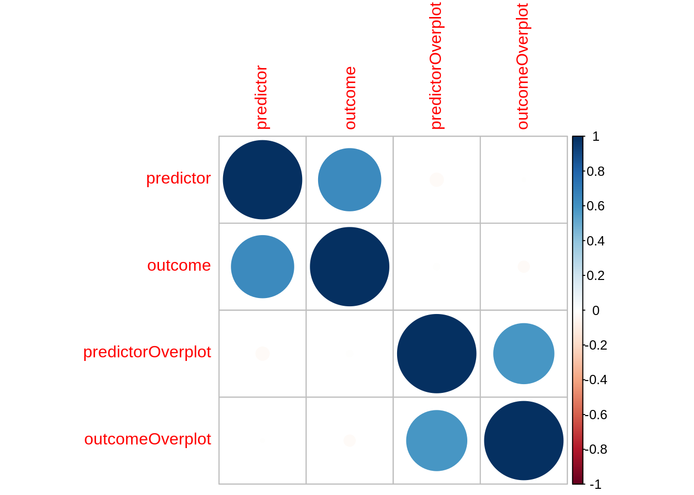
6.3.3 Scatterplot matrix
scatterplotMatrix(~ predictor + outcome + predictorOverplot + outcomeOverplot, data = df, use = "pairwise.complete.obs")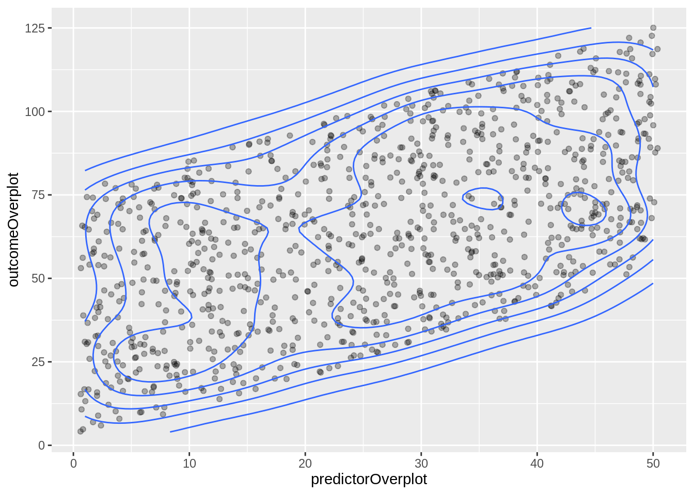
6.3.4 Pairs panels
pairs.panels(df[,c("predictor","outcome","predictorOverplot","outcomeOverplot")])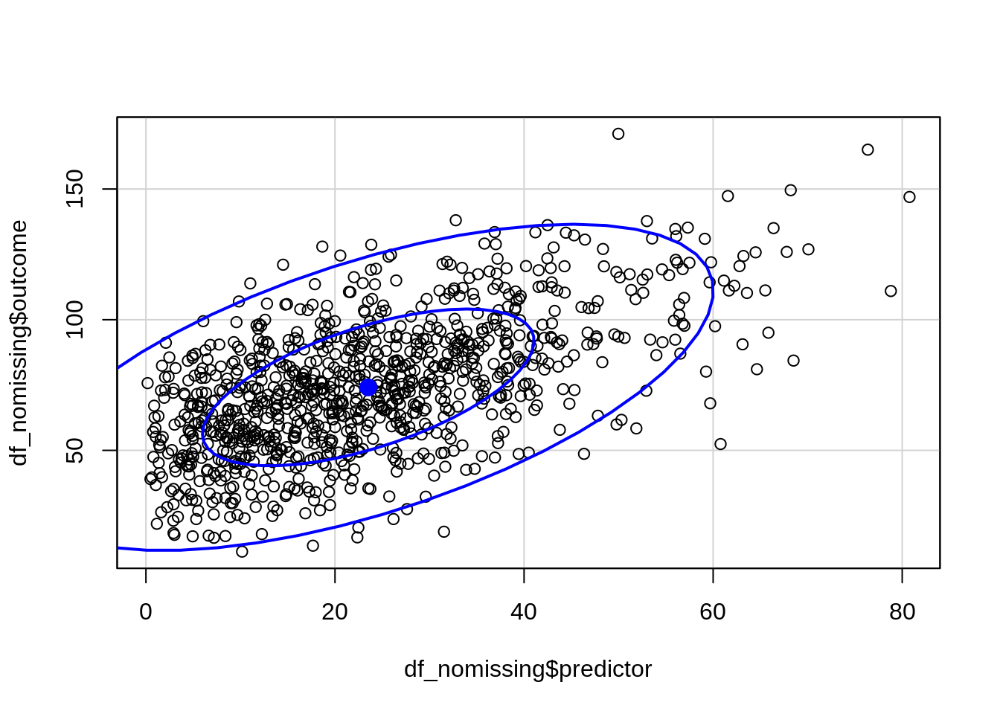
6.4 Effect Plots
6.4.1 Multiple Regression Model
multipleRegressionModel <- lm(outcome ~ predictor + predictorOverplot, data = df, na.action = "na.exclude")
allEffects(multipleRegressionModel)## model: outcome ~ predictor + predictorOverplot
##
## predictor effect
## predictor
## 0.1 20 40 60 80
## 49.17748 70.48444 91.89847 113.31249 134.72652
##
## predictorOverplot effect
## predictorOverplot
## 1 10 30 40 50
## 72.81957 73.01843 73.46034 73.68130 73.90226plot(allEffects(multipleRegressionModel))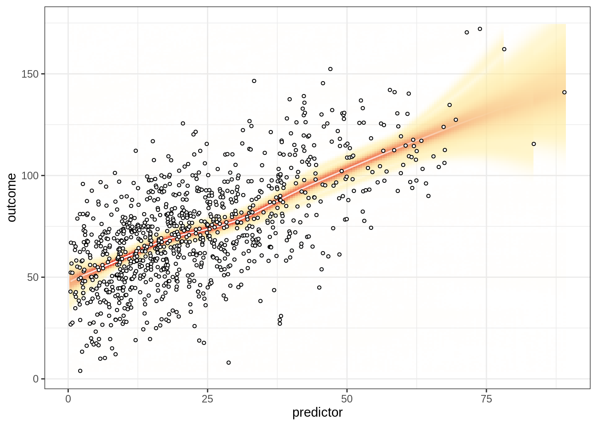
6.4.2 Multilevel Regression Model
multilevelRegressionModel <- lme(outcome ~ predictor + predictorOverplot, random = ~ 1|ID, method = "ML", data = df, na.action = "na.exclude")
allEffects(multilevelRegressionModel)## model: outcome ~ predictor + predictorOverplot
##
## predictor effect
## predictor
## 0.1 20 40 60 80
## 49.17748 70.48444 91.89847 113.31249 134.72652
##
## predictorOverplot effect
## predictorOverplot
## 1 10 30 40 50
## 72.81957 73.01843 73.46034 73.68130 73.90226plot(allEffects(multilevelRegressionModel))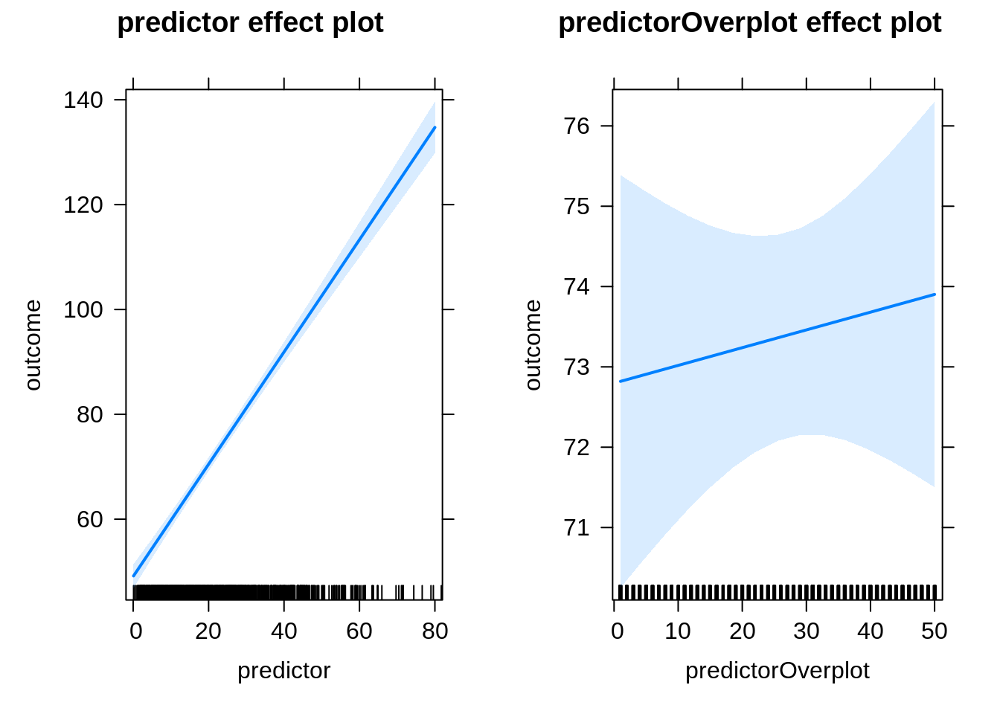
7 Session Info
sessionInfo()## R version 4.2.0 (2022-04-22)
## Platform: x86_64-pc-linux-gnu (64-bit)
## Running under: Ubuntu 20.04.4 LTS
##
## Matrix products: default
## BLAS: /usr/lib/x86_64-linux-gnu/blas/libblas.so.3.9.0
## LAPACK: /usr/lib/x86_64-linux-gnu/lapack/liblapack.so.3.9.0
##
## locale:
## [1] LC_CTYPE=C.UTF-8 LC_NUMERIC=C LC_TIME=C.UTF-8
## [4] LC_COLLATE=C.UTF-8 LC_MONETARY=C.UTF-8 LC_MESSAGES=C.UTF-8
## [7] LC_PAPER=C.UTF-8 LC_NAME=C LC_ADDRESS=C
## [10] LC_TELEPHONE=C LC_MEASUREMENT=C.UTF-8 LC_IDENTIFICATION=C
##
## attached base packages:
## [1] stats graphics grDevices utils datasets methods base
##
## other attached packages:
## [1] petersenlab_0.1.2-9006 psych_2.2.5 ggplot2_3.3.6
## [4] corrplot_0.92 effects_4.2-1 nlme_3.1-157
## [7] ellipse_0.4.3 vioplot_0.3.7 zoo_1.8-10
## [10] sm_2.2-5.7 car_3.0-13 carData_3.0-5
##
## loaded via a namespace (and not attached):
## [1] insight_0.17.1 RColorBrewer_1.1-3 tools_4.2.0
## [4] backports_1.4.1 bslib_0.3.1 utf8_1.2.2
## [7] R6_2.5.1 KernSmooth_2.23-20 rpart_4.1.16
## [10] Hmisc_4.7-0 DBI_1.1.2 colorspace_2.0-3
## [13] nnet_7.3-17 withr_2.5.0 tidyselect_1.1.2
## [16] gridExtra_2.3 mnormt_2.0.2 compiler_4.2.0
## [19] cli_3.3.0 htmlTable_2.4.0 isoband_0.2.5
## [22] mix_1.0-11 labeling_0.4.2 sass_0.4.1
## [25] scales_1.2.0 checkmate_2.1.0 mvtnorm_1.1-3
## [28] stringr_1.4.0 digest_0.6.29 pbivnorm_0.6.0
## [31] foreign_0.8-82 minqa_1.2.4 rmarkdown_2.14
## [34] base64enc_0.1-3 jpeg_0.1-9 pkgconfig_2.0.3
## [37] htmltools_0.5.2 lme4_1.1-29 highr_0.9
## [40] fastmap_1.1.0 htmlwidgets_1.5.4 rlang_1.0.2
## [43] rstudioapi_0.13 farver_2.1.0 jquerylib_0.1.4
## [46] generics_0.1.2 jsonlite_1.8.0 dplyr_1.0.9
## [49] magrittr_2.0.3 Formula_1.2-4 Matrix_1.4-1
## [52] Rcpp_1.0.8.3 munsell_0.5.0 fansi_1.0.3
## [55] abind_1.4-5 lifecycle_1.0.1 stringi_1.7.6
## [58] yaml_2.3.5 MASS_7.3-56 plyr_1.8.7
## [61] lavaan_0.6-11 grid_4.2.0 parallel_4.2.0
## [64] crayon_1.5.1 lattice_0.20-45 splines_4.2.0
## [67] tmvnsim_1.0-2 knitr_1.39 pillar_1.7.0
## [70] boot_1.3-28 estimability_1.3 reshape2_1.4.4
## [73] stats4_4.2.0 glue_1.6.2 evaluate_0.15
## [76] mitools_2.4 latticeExtra_0.6-29 data.table_1.14.2
## [79] png_0.1-7 vctrs_0.4.1 nloptr_2.0.3
## [82] gtable_0.3.0 purrr_0.3.4 xfun_0.31
## [85] xtable_1.8-4 survey_4.1-1 survival_3.3-1
## [88] viridisLite_0.4.0 tibble_3.1.7 cluster_2.1.3
## [91] ellipsis_0.3.2LS0tCnRpdGxlOiAiRXhwbG9yYXRvcnkgRGF0YSBBbmFseXNpcyIKLS0tCgpgYGB7ciBzZXR1cCwgaW5jbHVkZSA9IEZBTFNFfQprbml0cjo6b3B0c19jaHVuayRzZXQoZWNobyA9IFRSVUUsCiAgICAgICAgICAgICAgICAgICAgICBlcnJvciA9IFRSVUUpCmBgYAoKIyBSYXRpb25hbGUKCkltcG9ydGFudCBmb3IgdW5kZXJzdGFuZGluZyBkYXRhLCBjaGVja2luZyBmb3IgZGF0YSBpc3N1ZXMvZXJyb3JzLCBjaGVja2luZyBhc3N1bXB0aW9ucyBmb3IgZGlmZmVyZW50IHN0YXRpc3RpY2FsIG1vZGVscy4KCkxPT0sgQVQgWU9VUiBEQVRB4oCUbW9zdCBvdmVybG9va2VkIHN0ZXAgaW4gZGF0YSBhbmFseXNpcyEKCiMgUHJlYW1ibGUKCiMjIEluc3RhbGwgTGlicmFyaWVzCgpgYGB7cn0KI2luc3RhbGwucGFja2FnZXMoInJlbW90ZXMiKQojcmVtb3Rlczo6aW5zdGFsbF9naXQoImh0dHBzOi8vcmVzZWFyY2gtZ2l0LnVpb3dhLmVkdS9QZXRlcnNlbkxhYi9wZXRlcnNlbmxhYi5naXQiKQpgYGAKCiMjIExvYWQgTGlicmFyaWVzCgpgYGB7ciwgbWVzc2FnZSA9IEZBTFNFLCB3YXJuaW5nID0gRkFMU0V9CmxpYnJhcnkoInBldGVyc2VubGFiIikKbGlicmFyeSgiY2FyIikKbGlicmFyeSgidmlvcGxvdCIpCmxpYnJhcnkoImVsbGlwc2UiKQpsaWJyYXJ5KCJubG1lIikKbGlicmFyeSgiZWZmZWN0cyIpCmxpYnJhcnkoImNvcnJwbG90IikKbGlicmFyeSgiZ2dwbG90MiIpCmxpYnJhcnkoInBzeWNoIikKYGBgCgojIFNpbXVsYXRlIERhdGEKCmBgYHtyfQpzZXQuc2VlZCg1MjI0MikKCm4gPC0gMTAwMAoKSUQgPC0gcmVwKDE6MTAwLCBlYWNoID0gMTApCnByZWRpY3RvciA8LSByYmV0YShuLCAxLjUsIDUpICogMTAwCm91dGNvbWUgPC0gcHJlZGljdG9yICsgcm5vcm0obiwgbWVhbiA9IDAsIHNkID0gMjApICsgNTAKbnVtYmVyIDwtIHNhbXBsZSgxOjEwMDAsIHJlcGxhY2UgPSBUUlVFKQoKcHJlZGljdG9yT3ZlcnBsb3QgPC0gc2FtcGxlKDE6NTAsIG4sIHJlcGxhY2UgPSBUUlVFKQpvdXRjb21lT3ZlcnBsb3QgPC0gcHJlZGljdG9yT3ZlcnBsb3QgKyBzYW1wbGUoMTo3NSwgbiwgcmVwbGFjZSA9IFRSVUUpCgpkZiA8LSBkYXRhLmZyYW1lKElEID0gSUQsCiAgICAgICAgICAgICAgICAgcHJlZGljdG9yID0gcHJlZGljdG9yLAogICAgICAgICAgICAgICAgIG91dGNvbWUgPSBvdXRjb21lLAogICAgICAgICAgICAgICAgIHByZWRpY3Rvck92ZXJwbG90ID0gcHJlZGljdG9yT3ZlcnBsb3QsCiAgICAgICAgICAgICAgICAgb3V0Y29tZU92ZXJwbG90ID0gb3V0Y29tZU92ZXJwbG90KQoKZGZbc2FtcGxlKDE6biwgc2l6ZSA9IDEwKSwgInByZWRpY3RvciJdIDwtIE5BCmRmW3NhbXBsZSgxOm4sIHNpemUgPSAxMCksICJvdXRjb21lIl0gPC0gTkEKZGZbc2FtcGxlKDE6biwgc2l6ZSA9IDEwKSwgInByZWRpY3Rvck92ZXJwbG90Il0gPC0gTkEKZGZbc2FtcGxlKDE6biwgc2l6ZSA9IDEwKSwgIm91dGNvbWVPdmVycGxvdCJdIDwtIE5BCmBgYAoKIyBEZXNjcmlwdGl2ZSBzdGF0aXN0aWNzCgpgYGB7ciwgaW5jbHVkZSA9IEZBTFNFfQpkZXRhY2goInBhY2thZ2U6cGV0ZXJzZW5sYWIiLCB1bmxvYWQgPSBUUlVFKQp1bmxvYWROYW1lc3BhY2UoIkhtaXNjIikKYGBgCgpgYGB7cn0KcHN5Y2g6OmRlc2NyaWJlKGRmKQpgYGAKCmBgYHtyLCBpbmNsdWRlID0gRkFMU0V9CmxpYnJhcnkoInBldGVyc2VubGFiIikKYGBgCgojIyBTYW1wbGUKCi0gTuKAlGV4cGVjdGVkPwotIEV4dGVudCBvZiBtaXNzaW5nbmVzcwoKIyMgRGlzdHJpYnV0aW9uCgotIEZyZXF1ZW5jaWVzCgojIyBDZW50cmFsIFRlbmRlbmN5CgotIE1lYW4KLSBNZWRpYW4KLSBNb2RlCgojIyBEaXNwZXJzaW9uCgotIFN0YW5kYXJkIGRldmlhdGlvbgotIE9ic2VydmVkIG1pbmltdW0gYW5kIG1heGltdW0gKHZpcy3DoC12aXMgcG9zc2libGUgbWluaW11bSBhbmQgbWF4aW11bSkKLSBTa2V3bmVzcwotIEt1cnRvc2lzCgojIyBEaXN0cmlidXRpb24gUGxvdHMKClNlZSBbaGVyZV0oYW5hbHlzaXMtZmlndXJlcy5odG1sKSBmb3IgcmVzb3VyY2VzIGZvciBjcmVhdGluZyBmaWd1cmVzIGluIFIuCgojIyMgSGlzdG9ncmFtCgojIyMjIEJhc2UgUgoKYGBge3J9Cmhpc3QoZGYkb3V0Y29tZSkKYGBgCgojIyMjIGBnZ3Bsb3QyYAoKYGBge3J9CmdncGxvdChkZiwgYWVzKHggPSBvdXRjb21lKSkgKwogIGdlb21faGlzdG9ncmFtKGNvbG9yID0gMSkKYGBgCgojIyMgSGlzdG9ncmFtIG92ZXJsYWlkIHdpdGggZGVuc2l0eSBwbG90IGFuZCBydWcgcGxvdAoKIyMjIyBCYXNlIFIKCmBgYHtyfQpoaXN0KGRmJG91dGNvbWUsIHByb2IgPSBUUlVFKQpsaW5lcyhkZW5zaXR5KGRmJG91dGNvbWUsIG5hLnJtID0gVFJVRSkpCnJ1ZyhkZiRvdXRjb21lKQpgYGAKCiMjIyMgYGdncGxvdDJgCgpgYGB7cn0KZ2dwbG90KGRmLCBhZXMoeCA9IG91dGNvbWUpKSArCiAgZ2VvbV9oaXN0b2dyYW0oYWVzKHkgPSAuLmRlbnNpdHkuLiksIGNvbG9yID0gMSkgKwogIGdlb21fZGVuc2l0eSgpICsKICBnZW9tX3J1ZygpCmBgYAoKIyMjIERlbnNpdHkgUGxvdAoKIyMjIyBCYXNlIFIKCmBgYHtyfQpwbG90KGRlbnNpdHkoZGYkb3V0Y29tZSwgbmEucm0gPSBUUlVFKSkKYGBgCgojIyMjIGBnZ3Bsb3QyYAoKYGBge3J9CmdncGxvdChkZiwgYWVzKHggPSBvdXRjb21lKSkgKwogIGdlb21fZGVuc2l0eSgpCmBgYAoKIyMjIEJveCBhbmQgd2hpc2tlciBwbG90IChib3hwbG90KQoKIyMjIyBCYXNlIFIKCmBgYHtyfQpib3hwbG90KGRmJG91dGNvbWUsIGhvcml6b250YWwgPSBUUlVFKQpgYGAKCiMjIyMgYGdncGxvdDJgCgpgYGB7cn0KZ2dwbG90KGRmLCBhZXMoeCA9IG91dGNvbWUpKSArCiAgZ2VvbV9ib3hwbG90KCkKYGBgCiMjIyBWaW9saW4gcGxvdAoKIyMjIyBCYXNlIFIKCmBgYHtyfQp2aW9wbG90KG5hLm9taXQoZGYkb3V0Y29tZSksIGhvcml6b250YWwgPSBUUlVFKQpgYGAKCiMjIyMgYGdncGxvdDJgCgpgYGB7cn0KZ2dwbG90KGRmLCBhZXMoeCA9ICIiLCB5ID0gb3V0Y29tZSkpICsKICBnZW9tX3Zpb2xpbigpCmBgYAoKIyBCaXZhcmlhdGUgQXNzb2NpYXRpb25zCgojIyBIaWdoIERlbnNpdHkgU2NhdHRlcnBsb3QKCmBgYHtyfQpnZ3Bsb3QoZGYsIGFlcyh4ID0gcHJlZGljdG9yT3ZlcnBsb3QsIHkgPSBvdXRjb21lT3ZlcnBsb3QpKSArIAogIGdlb21fcG9pbnQocG9zaXRpb24gPSAiaml0dGVyIiwgYWxwaGEgPSAwLjMpICsgCiAgZ2VvbV9kZW5zaXR5MmQoKQoKc21vb3RoU2NhdHRlcihkZiRwcmVkaWN0b3JPdmVycGxvdCwgZGYkb3V0Y29tZU92ZXJwbG90KQpgYGAKCiMjIERhdGEgRWxsaXBzZQoKYGBge3J9CmRmX25vbWlzc2luZyA8LSBuYS5vbWl0KGRmWyxjKCJwcmVkaWN0b3IiLCJvdXRjb21lIildKQpkYXRhRWxsaXBzZShkZl9ub21pc3NpbmckcHJlZGljdG9yLCBkZl9ub21pc3Npbmckb3V0Y29tZSwgbGV2ZWxzID0gYygwLjUsIC45NSkpCmBgYAoKIyMgVmlzdWFsbHkgV2VpZ2h0ZWQgUmVncmVzc2lvbgoKYGBge3IsIG1lc3NhZ2UgPSBGQUxTRSwgcmVzdWx0cyA9ICJoaWRlIn0KdndSZWcob3V0Y29tZSB+IHByZWRpY3RvciwgZGF0YSA9IGRmKQpgYGAKCiMgQmFzaWMgaW5mZXJlbnRpYWwgc3RhdGlzdGljcwoKIyMgU3RhdGlzdGljYWwgZGVjaXNpb24gdHJlZQoKIyMgVGVzdHMgb2Ygc3lzdGVtYXRpYyBtaXNzaW5nbmVzcyAoaS5lLiwgd2hldGhlciBtaXNzaW5nbmVzcyBvbiBhIHZhcmlhYmxlIGRlcGVuZHMgb24gb3RoZXIgdmFyaWFibGVzKQoKLSBHZW5lcmFsbHkgdGVzdDoKICAgIC0gV2hldGhlciBvdXRjb21lIHZhcmlhYmxlKHMpIGRpZmZlciBhcyBhIGZ1bmN0aW9uIG9mIGFueSBtb2RlbCB2YXJpYWJsZXMgKHByZWRpY3RvcnMgYW5kIGNvdmFyaWF0ZXMpIGFuZCBhcyBhIGZ1bmN0aW9uIG9mIGFueSBrZXkgZGVtb2dyYXBoaWMgY2hhcmFjdGVyaXN0aWNzIChzZXgsIGV0aG5pY2l0eSwgU0VTKQogICAgLSBXaGV0aGVyIGZvY2FsIHByZWRpY3RvciB2YXJpYWJsZShzKSBkaWZmZXIgYXMgYSBmdW5jdGlvbiBvZiBhbnkgbW9kZWwgdmFyaWFibGVzIChpbmNsdWRpbmcgb3V0Y29tZSB2YXJpYWJsZSkgYW5kIGFzIGEgZnVuY3Rpb24gb2YgYW55IGtleSBkZW1vZ3JhcGhpYyBjaGFyYWN0ZXJpc3RpY3MKLSBGb3IgaW5zdGFuY2U6CiAgICAtIFdoZXRoZXIgbWFsZXMgYXJlIG1vcmUgbGlrZWx5IHRoYW4gZ2lybHMgdG8gYmUgbWlzc2luZyBFRUcgc2NvcmVzCiAgICAtIFdoZXRoZXIgbG9uZ2l0dWRpbmFsIGF0dHJpdGlvbiBpcyBncmVhdGVyIGluIGxvd2VyIFNFUyBmYW1pbGllcwotIElmIG1pc3NpbmduZXNzIGRpZmZlcnMgc3lzdGVtYXRpY2FsbHkgYXMgYSBmdW5jdGlvbiBvZiBvdGhlciB2YXJpYWJsZXMsIGNhbiBpbmNsdWRlIHRoYXQgdmFyaWFibGUgYXMgYSBjb250cm9sIHZhcmlhYmxlIGluIG1vZGVscywgYW5kL29yIGNhbiBpbmNsdWRlIHRoYXQgdmFyaWFibGUgaW4gbXVsdGlwbGUgaW1wdXRhdGlvbiB0byBpbmZvcm0gaW1wdXRlZCBzY29yZXMgZm9yIG1pc3NpbmcgdmFsdWVzCgojIyBNdWx0aXZhcmlhdGUgQXNzb2NpYXRpb25zCgojIyMgQ29ycmVsYXRpb24gTWF0cml4CgojIyMjIFBlYXJzb24gQ29ycmVsYXRpb25zCgpgYGB7cn0KY29yLnRhYmxlKGRmWyxjKCJwcmVkaWN0b3IiLCJvdXRjb21lIiwicHJlZGljdG9yT3ZlcnBsb3QiLCJvdXRjb21lT3ZlcnBsb3QiKV0pCmNvci50YWJsZShkZlssYygicHJlZGljdG9yIiwib3V0Y29tZSIsInByZWRpY3Rvck92ZXJwbG90Iiwib3V0Y29tZU92ZXJwbG90IildLCB0eXBlID0gIm1hbnVzY3JpcHQiKQpjb3IudGFibGUoZGZbLGMoInByZWRpY3RvciIsIm91dGNvbWUiLCJwcmVkaWN0b3JPdmVycGxvdCIsIm91dGNvbWVPdmVycGxvdCIpXSwgdHlwZSA9ICJtYW51c2NyaXB0QmlnIikKYGBgCgojIyMjIFNwZWFybWFuIENvcnJlbGF0aW9ucwoKYGBge3J9CmNvci50YWJsZShkZlssYygicHJlZGljdG9yIiwib3V0Y29tZSIsInByZWRpY3Rvck92ZXJwbG90Iiwib3V0Y29tZU92ZXJwbG90IildLCBjb3JyZWxhdGlvbiA9ICJzcGVhcm1hbiIpCmNvci50YWJsZShkZlssYygicHJlZGljdG9yIiwib3V0Y29tZSIsInByZWRpY3Rvck92ZXJwbG90Iiwib3V0Y29tZU92ZXJwbG90IildLCB0eXBlID0gIm1hbnVzY3JpcHQiLCBjb3JyZWxhdGlvbiA9ICJzcGVhcm1hbiIpCmNvci50YWJsZShkZlssYygicHJlZGljdG9yIiwib3V0Y29tZSIsInByZWRpY3Rvck92ZXJwbG90Iiwib3V0Y29tZU92ZXJwbG90IildLCB0eXBlID0gIm1hbnVzY3JpcHRCaWciLCBjb3JyZWxhdGlvbiA9ICJzcGVhcm1hbiIpCmBgYAoKIyMjIyBQYXJ0aWFsIENvcnJlbGF0aW9ucwoKYGBge3J9CnBhcnRpYWxjb3IudGFibGUoZGZbLGMoInByZWRpY3RvciIsIm91dGNvbWUiLCJwcmVkaWN0b3JPdmVycGxvdCIpXSwgeiA9IGRmWyxjKCJvdXRjb21lT3ZlcnBsb3QiKV0pCnBhcnRpYWxjb3IudGFibGUoZGZbLGMoInByZWRpY3RvciIsIm91dGNvbWUiLCJwcmVkaWN0b3JPdmVycGxvdCIpXSwgeiA9IGRmWyxjKCJvdXRjb21lT3ZlcnBsb3QiKV0sIHR5cGUgPSAibWFudXNjcmlwdCIpCnBhcnRpYWxjb3IudGFibGUoZGZbLGMoInByZWRpY3RvciIsIm91dGNvbWUiLCJwcmVkaWN0b3JPdmVycGxvdCIpXSwgeiA9IGRmWyxjKCJvdXRjb21lT3ZlcnBsb3QiKV0sIHR5cGUgPSAibWFudXNjcmlwdEJpZyIpCmBgYAoKIyMjIENvcnJlbG9ncmFtCgpgYGB7cn0KY29ycnBsb3QoY29yKGRmWyxjKCJwcmVkaWN0b3IiLCJvdXRjb21lIiwicHJlZGljdG9yT3ZlcnBsb3QiLCJvdXRjb21lT3ZlcnBsb3QiKV0sIHVzZSA9ICJwYWlyd2lzZS5jb21wbGV0ZS5vYnMiKSkKYGBgCgojIyMgU2NhdHRlcnBsb3QgbWF0cml4CgpgYGB7cn0Kc2NhdHRlcnBsb3RNYXRyaXgofiBwcmVkaWN0b3IgKyBvdXRjb21lICsgcHJlZGljdG9yT3ZlcnBsb3QgKyBvdXRjb21lT3ZlcnBsb3QsIGRhdGEgPSBkZiwgdXNlID0gInBhaXJ3aXNlLmNvbXBsZXRlLm9icyIpCmBgYAoKIyMjIFBhaXJzIHBhbmVscwoKYGBge3J9CnBhaXJzLnBhbmVscyhkZlssYygicHJlZGljdG9yIiwib3V0Y29tZSIsInByZWRpY3Rvck92ZXJwbG90Iiwib3V0Y29tZU92ZXJwbG90IildKQpgYGAKCiMjIEVmZmVjdCBQbG90cwoKIyMjIE11bHRpcGxlIFJlZ3Jlc3Npb24gTW9kZWwKCmBgYHtyfQptdWx0aXBsZVJlZ3Jlc3Npb25Nb2RlbCA8LSBsbShvdXRjb21lIH4gcHJlZGljdG9yICsgcHJlZGljdG9yT3ZlcnBsb3QsIGRhdGEgPSBkZiwgbmEuYWN0aW9uID0gIm5hLmV4Y2x1ZGUiKQphbGxFZmZlY3RzKG11bHRpcGxlUmVncmVzc2lvbk1vZGVsKQpwbG90KGFsbEVmZmVjdHMobXVsdGlwbGVSZWdyZXNzaW9uTW9kZWwpKQpgYGAKCiMjIyBNdWx0aWxldmVsIFJlZ3Jlc3Npb24gTW9kZWwKCmBgYHtyfQptdWx0aWxldmVsUmVncmVzc2lvbk1vZGVsIDwtIGxtZShvdXRjb21lIH4gcHJlZGljdG9yICsgcHJlZGljdG9yT3ZlcnBsb3QsIHJhbmRvbSA9IH4gMXxJRCwgbWV0aG9kID0gIk1MIiwgZGF0YSA9IGRmLCBuYS5hY3Rpb24gPSAibmEuZXhjbHVkZSIpCmFsbEVmZmVjdHMobXVsdGlsZXZlbFJlZ3Jlc3Npb25Nb2RlbCkKcGxvdChhbGxFZmZlY3RzKG11bHRpbGV2ZWxSZWdyZXNzaW9uTW9kZWwpKQpgYGAKCiMgU2Vzc2lvbiBJbmZvCgpgYGB7cn0Kc2Vzc2lvbkluZm8oKQpgYGAK